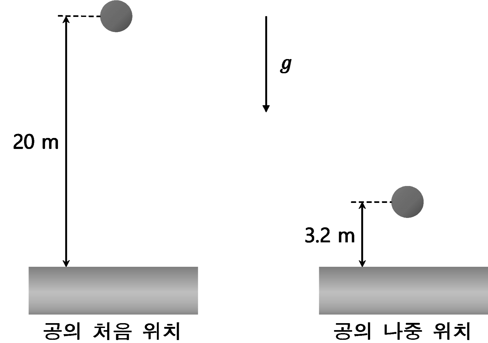

문제 2
그림과 같이 질량이 0.5 kg인 공이 20 m 높이에서 정지 상태로부터 자유 낙하하여 평평한 바닥과 충돌 후 도달한 최고 높이가 3.2 m이었다. (단, 중력 가속도 \(g = 10\) m/s\(^2\)이고, 공기의 저항과 공의 크기는 무시한다.)

[2-i] 공과 바닥의 충돌과정에서 줄어든 역학적 에너지를 구하고 그 근거를 논하시오.
[2-ii] 공이 바닥으로부터 받은 충격량의 크기를 구하고 그 근거를 논하시오.
그림과 같이 질량이 0.5 kg인 공이 20 m 높이에서 정지 상태로부터 자유 낙하하여 평평한 바닥과 충돌 후 도달한 최고 높이가 3.2 m이었다. (단, 중력 가속도 \(g = 10\) m/s\(^2\)이고, 공기의 저항과 공의 크기는 무시한다.)
[2-i] 공과 바닥의 충돌과정에서 줄어든 역학적 에너지를 구하고 그 근거를 논하시오.
[2-ii] 공이 바닥으로부터 받은 충격량의 크기를 구하고 그 근거를 논하시오.